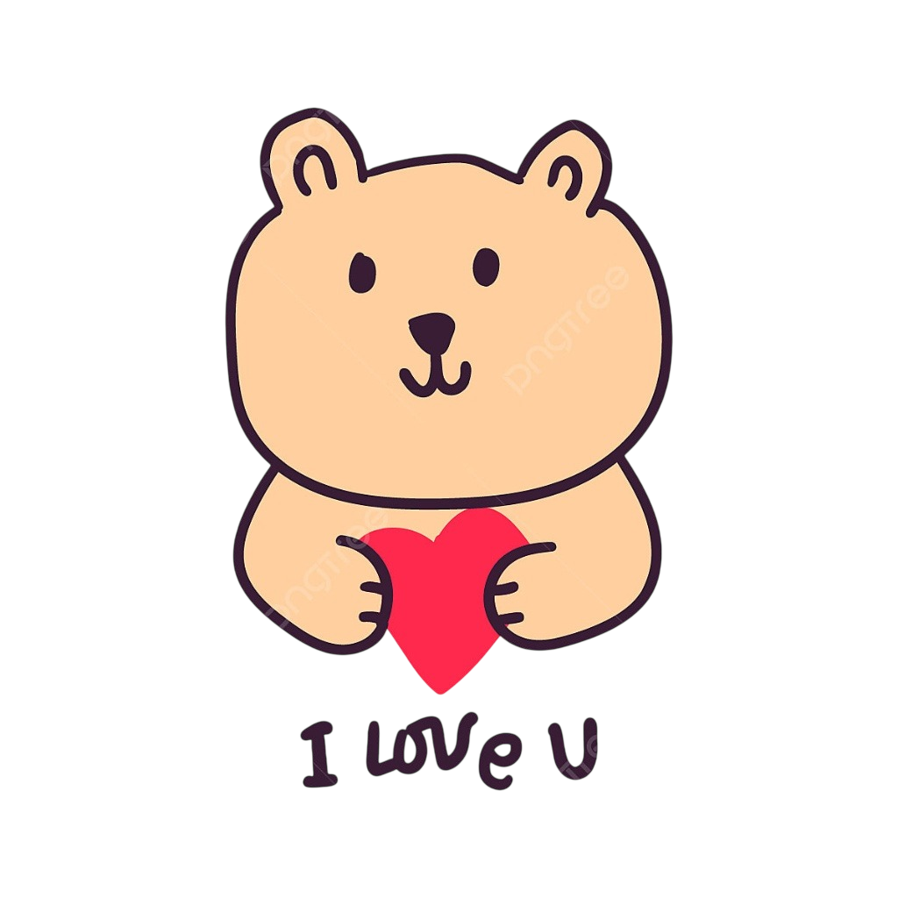
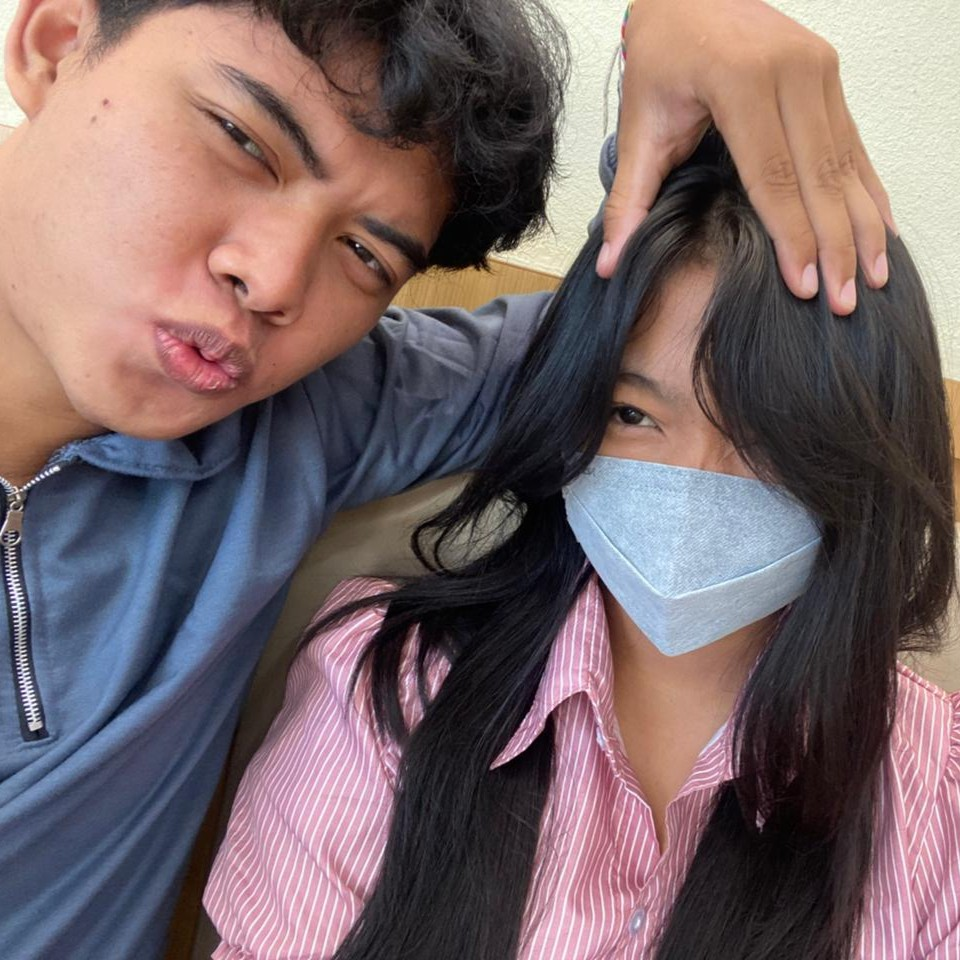
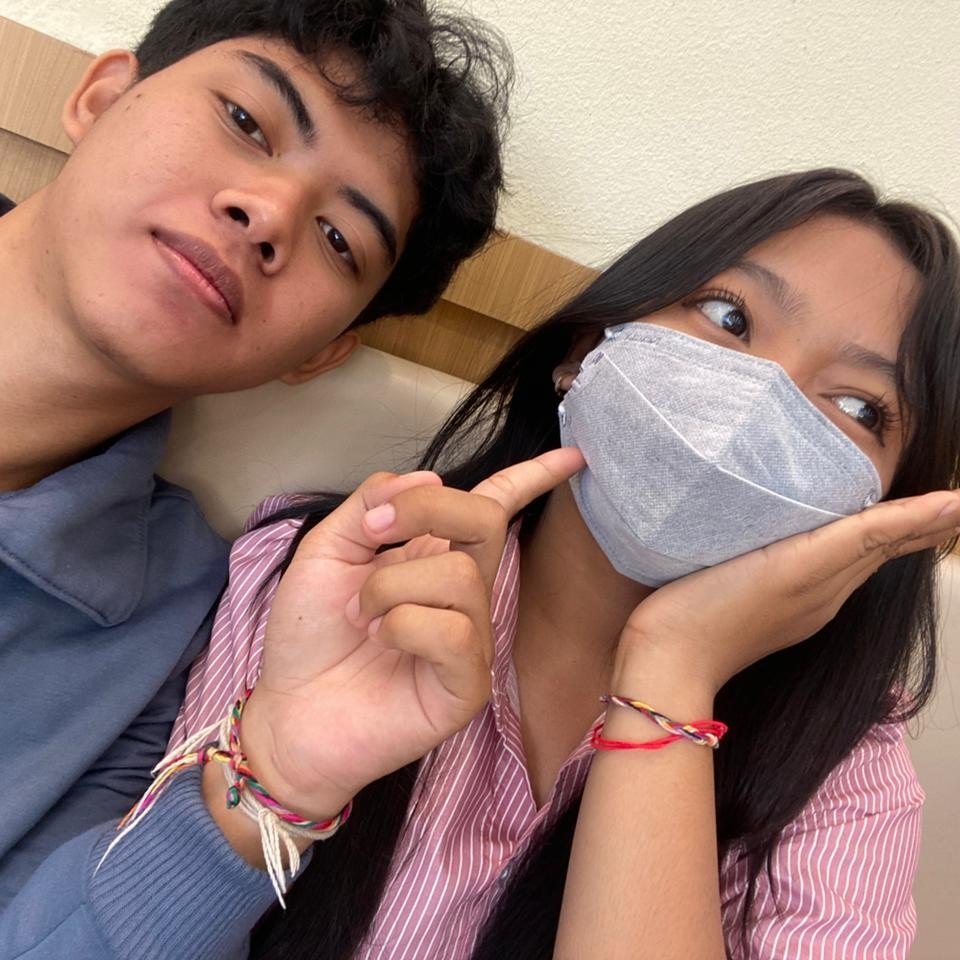
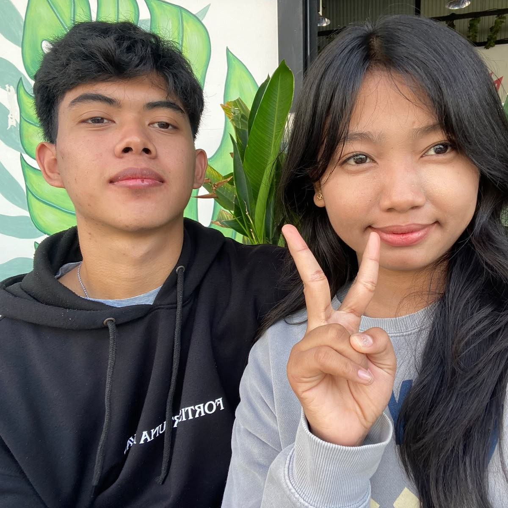
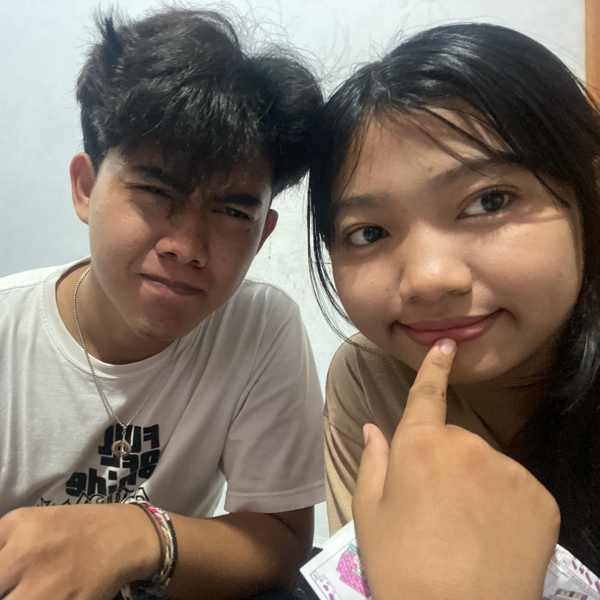
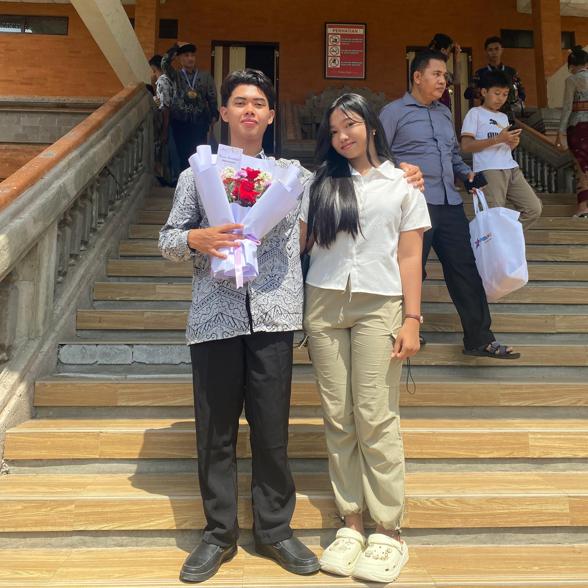
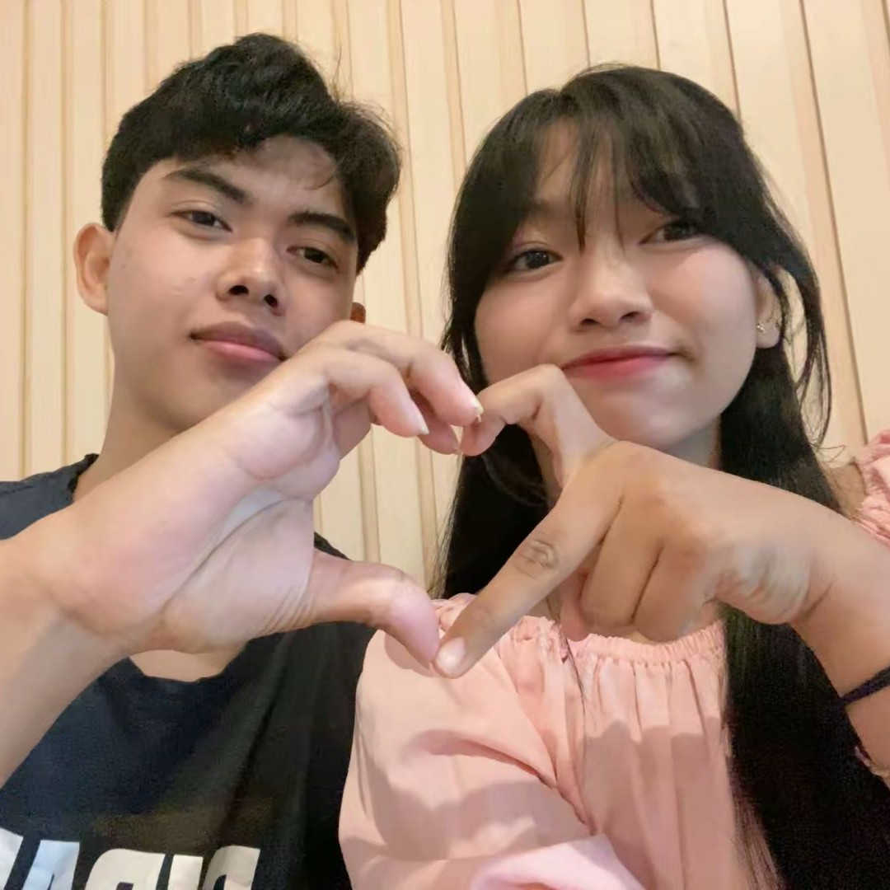

Sentuh hatinya... ❤️
Haloooo Sintaaaaaaaaa
Aku mau minta maaf sin buat selama ini aku selalu bikin janji manis yang ga bisa ku tepatin dan berujung malah bikin kau kecewa, mulutku ceplas ceplos banget tanpa mikir, harusnya kalo ga bisa aku ga usah bikinin janji yang bikin kau berharap dan pada akhirnya malah ngecewain dirimu.
Dan maaf juga kalo aku selama ini sering nyela saat kau cerita aku kayak ga menghargai kau jadinya padahal dalam hubungan ini ga semua tentang aku, pasti aku nyebelin banget ya, kalo aku gitu lagi plis tegur aja sin marahin aku, aku suka kok kamu marahin aku ngeluarin sifat jelek kayak gini.
Maaf juga aku kayak kurang perhatiin kamu aku bahkan ga bisa inget hal sesederhana letak tai lalatmu, i mean se enggak peka apa diriku hal kecil gitu aja ga tau, aku mau berubah tapi mungkin ga secepet itu karena aku orangnya emang rada pelupa(maklum dah tua), tapi aku usahain bakal berubah dan bisa buat lebih mahamin dirimu .
Untuk kedepannya aku akan usahain untuk bisa ngungkapin sayang dan cintaku ga cuma omong kosong aja ga ada action, semoga kedepannya hubungan kita bisa lebih baik lagi, bisa bikin satu sama lain nyaman dan ga hanya salah satu dari kita aja yang ingin excited sendiri(btw coba klik hati hati yang melayang itu....).
I lOVE YOU SINTAAAAAAAAAAAAAA❤️
Masih Inget Momen Ini gakk???

Belum ada
Belum ada
Belum ada
Belum ada
Belum ada
Belum ada